<!DOCTYPE lake>
<h2 data-lake-id="So7vt" id="So7vt"><span data-lake-id="u304d7573" id="u304d7573">学习目标</span></h2><ol list="u0405d17e"><li data-lake-id="u2847fd67" fid="uc36661d3" id="u2847fd67"><span data-lake-id="ub8a72328" id="ub8a72328">了解标准库来源</span></li><li data-lake-id="uc5666a31" fid="uc36661d3" id="uc5666a31"><span data-lake-id="u0d2f5849" id="u0d2f5849">熟悉模板搭建流程</span></li><li data-lake-id="u981c3397" fid="uc36661d3" id="u981c3397"><span data-lake-id="u2ec8d009" id="u2ec8d009">掌握在已有模板基础下进行开发</span></li></ol><h2 data-lake-id="igi83" id="igi83"><span data-lake-id="ua528de01" id="ua528de01">学习内容</span></h2><h3 data-lake-id="BYdsC" id="BYdsC"><span data-lake-id="u81eb85fd" id="u81eb85fd">开发文档获取</span></h3><p data-lake-id="u5561a5eb" id="u5561a5eb"><strong><span data-lake-id="u26c4c487" id="u26c4c487">用户手册</span></strong></p><p data-lake-id="ue5c480db" id="ue5c480db"><a data-lake-id="uc637f554" href="https://gd32mcu.com/cn/download/6?kw=GD32F4xx" id="uc637f554" rel="noopener noreferrer" target="_blank"><span data-lake-id="ua015b043" id="ua015b043">https://gd32mcu.com/cn/download/6?kw=GD32F4xx</span></a></p><p data-lake-id="u4d6e9955" id="u4d6e9955">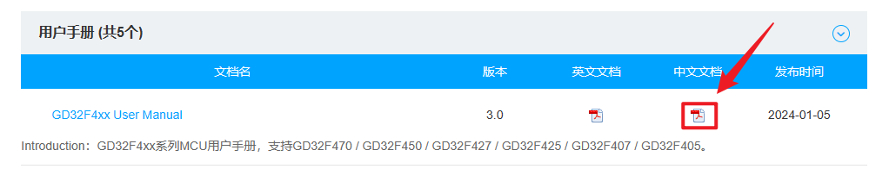</p><p data-lake-id="udb488f79" id="udb488f79"><strong><span data-lake-id="u3c3d7b87" id="u3c3d7b87">数据手册</span></strong></p><p data-lake-id="u61787423" id="u61787423"><a data-lake-id="u8d3e86bf" href="https://gd32mcu.com/cn/download?kw=GD32F407&amp;lan=cn" id="u8d3e86bf" rel="noopener noreferrer" target="_blank"><span data-lake-id="ud3e286b2" id="ud3e286b2">https://gd32mcu.com/cn/download?kw=GD32F407&amp;lan=cn</span></a></p><p data-lake-id="ufddf7a48" id="ufddf7a48">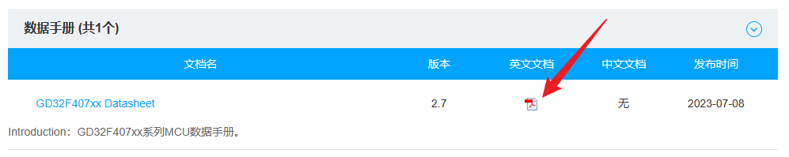</p><h3 data-lake-id="vEGPs" id="vEGPs"><span data-lake-id="u160e55ad" id="u160e55ad">标准外设库获取</span></h3><p data-lake-id="uaa538885" id="uaa538885"><span class="lake-fontsize-12" data-lake-id="u8f3b84bb" id="u8f3b84bb" style="color: rgb(51, 51, 51)">标准固件库获取我们可以从官网进行下载。</span></p><p data-lake-id="u88dfa4b8" id="u88dfa4b8"><span class="lake-fontsize-12" data-lake-id="u2dd70aac" id="u2dd70aac" style="color: rgb(51, 51, 51)">下载链接：</span><a data-lake-id="u1595b38d" href="http://www.gd32mcu.com/cn/download/7?kw=" id="u1595b38d" rel="noopener noreferrer" target="_blank"><span data-lake-id="ue10cd7e1" id="ue10cd7e1">http://www.gd32mcu.com/cn/download/7?kw=</span></a></p><p data-lake-id="u5d580c98" id="u5d580c98"><span class="lake-fontsize-12" data-lake-id="u180061d1" id="u180061d1" style="color: rgb(51, 51, 51)">找到 GD32F4xx Firmware Library 这个压缩包</span></p><p data-lake-id="u92a3f25f" id="u92a3f25f">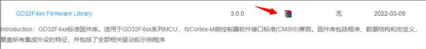</p><p data-lake-id="ufb19ba01" id="ufb19ba01"><span class="lake-fontsize-12" data-lake-id="uafdfca23" id="uafdfca23" style="color: rgb(51, 51, 51)">下载完成后，进行解压，解压后目录如图</span></p><p data-lake-id="ua75d47c0" id="ua75d47c0">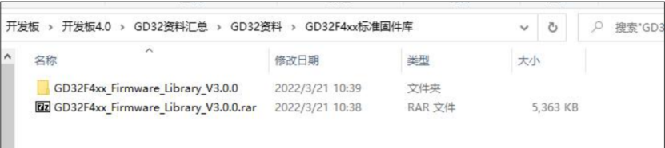</p><h3 data-lake-id="n0qyy" id="n0qyy"><span data-lake-id="u3bc5d50d" id="u3bc5d50d">目录介绍</span></h3><p data-lake-id="u5dc1ad76" id="u5dc1ad76"><span class="lake-fontsize-12" data-lake-id="u0e178115" id="u0e178115" style="color: rgb(51, 51, 51)">打开下载的 GD32F4xx 标准固件库，里面的目录如图</span></p><p data-lake-id="u7a6601d4" id="u7a6601d4">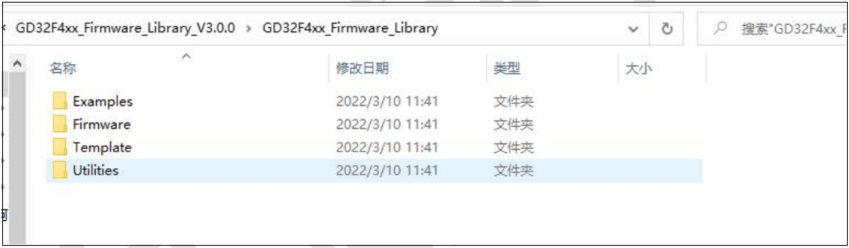</p><ul list="u9874b2e2"><li data-lake-id="u7bd25c71" fid="u2d220606" id="u7bd25c71"><span class="lake-fontsize-12" data-lake-id="u02a95d62" id="u02a95d62" style="color: rgb(51, 51, 51)">Examples：此文件夹包含的是官方编写的示例代码，涉及芯片的大部分功能。</span></li><li data-lake-id="ubd0d5e40" fid="u2d220606" id="ubd0d5e40"><span class="lake-fontsize-12" data-lake-id="u26dd67a4" id="u26dd67a4" style="color: rgb(51, 51, 51)">Firmware：此文件夹里面有 3 个文件夹，包含 CMSIS，标准外设库和 USB 库，存放官方封装的一些库函数，方便用户开发使用。</span></li><li data-lake-id="uf1b089f0" fid="u2d220606" id="uf1b089f0"><span class="lake-fontsize-12" data-lake-id="uc314832d" id="uc314832d" style="color: rgb(51, 51, 51)">Template：此文件夹是工程模板文件夹，里面包含 IAR 和 Keil 的工程示例。</span></li><li data-lake-id="ub8aa21c3" fid="u2d220606" id="ub8aa21c3"><span class="lake-fontsize-12" data-lake-id="u8d1de974" id="u8d1de974" style="color: rgb(51, 51, 51)">Utilities：此文件夹包含一些第三方组件和 GD32 配套的开发板文件。</span></li></ul><h4 data-lake-id="Iz97r" id="Iz97r"><span data-lake-id="u10900f8d" id="u10900f8d" style="color: rgb(51, 51, 51)">Firmware</span></h4><p data-lake-id="u6c5fc8f1" id="u6c5fc8f1">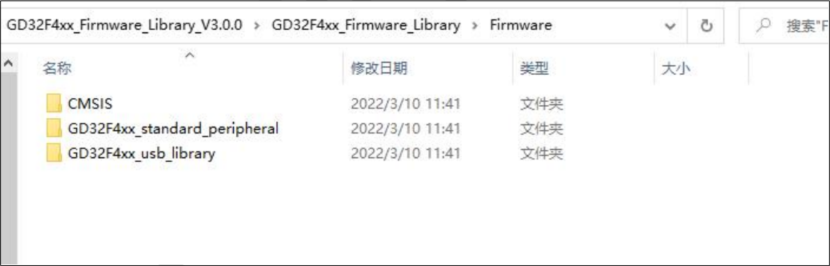</p><ul list="uaf5e557e"><li data-lake-id="uff0edd67" fid="u065c6eda" id="uff0edd67"><span class="lake-fontsize-12" data-lake-id="u627ac753" id="u627ac753" style="color: rgb(51, 51, 51)">CMSIS：微控制器软件接口标准(CMSIS：Cortex Microcontroller Software Interface Standard) 是Cortex-M 处理器系列的与供应商无关的硬件抽象层。</span><span class="lake-fontsize-12" data-lake-id="u34540f41" id="u34540f41" style="color: rgb(77, 77, 77)">规定了处理器内核与外设的接口，统一了内核访问外设寄存器的方法</span></li></ul><blockquote data-lake-id="u4287ae10" id="u4287ae10" style="padding-left: 2em"><p data-lake-id="ufcae0ee2" id="ufcae0ee2"><span class="lake-fontsize-12" data-lake-id="uc53d8476" id="uc53d8476" style="color: rgb(77, 77, 77)">POSIX（Portable Operating System Interface of UNIX），可移植操作系统接口，它定义了操作系统应该为应用程序提供的接口</span></p></blockquote><ul list="u68b882e8"><li data-lake-id="uab7c8bc5" fid="u33b4b0ec" id="uab7c8bc5"><span class="lake-fontsize-12" data-lake-id="u16340548" id="u16340548" style="color: rgb(51, 51, 51)">GD32F4xx_standard_peripheral: 从名称也可以看出，这个是 GD32F4 系列的标准外设库，存放一些封装了寄存器的库函数，我们后面编程也是依赖于这个库进行开发。</span></li><li data-lake-id="uc4ea1eb3" fid="u33b4b0ec" id="uc4ea1eb3"><span class="lake-fontsize-12" data-lake-id="u07e4bf62" id="u07e4bf62" style="color: rgb(51, 51, 51)">GD32F4xx_usb_library: 这个是 GD32F4 系列的 USB 库函数，可以帮助我们开发一些关于 USB 的应用，如鼠标，键盘，CDC 串口，模拟 U 盘等等</span></li></ul><h4 data-lake-id="djwnQ" id="djwnQ"><span data-lake-id="u41046402" id="u41046402" style="color: rgb(51, 51, 51)"> CMSIS</span></h4><h4 data-lake-id="Caccm" id="Caccm">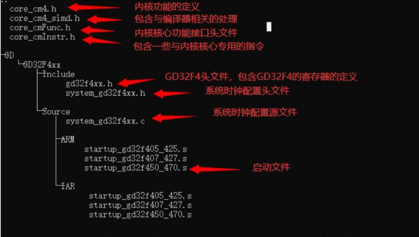</h4><p data-lake-id="u5aa469c4" id="u5aa469c4"><span data-lake-id="u269521d9" id="u269521d9">内部主要是汇编代码，这个是直接和芯片进行交互的，每种不同的芯片需要配套不同的cmsis接口实现。</span></p><h4 data-lake-id="TUx8f" id="TUx8f"><span data-lake-id="u52d2b825" id="u52d2b825" style="color: rgb(51, 51, 51)">GD32F4xx_standard_peripheral </span></h4><p data-lake-id="uc38b4612" id="uc38b4612"><span class="lake-fontsize-12" data-lake-id="u7e3d5d46" id="u7e3d5d46" style="color: rgb(51, 51, 51)">这个里面都是一些外设库文件，包含 GD32F4 芯片的绝大部分功能，包含 ADC，CAN，SDIO，SPI 等。</span></p><p data-lake-id="u25e4b7f2" id="u25e4b7f2"><span class="lake-fontsize-12" data-lake-id="u73e95832" id="u73e95832" style="color: rgb(51, 51, 51)">这个库是嫁接在cmsis的基础上的，F4系列不同的芯片可用公用这一套实现。</span></p><p data-lake-id="u6b05482f" id="u6b05482f"><span class="lake-fontsize-12" data-lake-id="u1375377f" id="u1375377f" style="color: rgb(51, 51, 51)">​</span><br/></p><h3 data-lake-id="x5mOA" id="x5mOA"><span data-lake-id="u2944e572" id="u2944e572" style="color: rgb(51, 51, 51)">项目模板搭建</span></h3><h4 data-lake-id="FWUkN" id="FWUkN"><span data-lake-id="u77532026" id="u77532026">前期准备</span></h4><ul class="lake-list" list="ud614eb5c"><li class="lake-list-node lake-list-task" data-lake-id="ue82fc774" fid="uf6f9b119" id="ue82fc774" version="1694767734677"><span class="yuque-card-unsupported">[checkbox]</span><span class="lake-fontsize-12" data-lake-id="ua6089d8a" id="ua6089d8a" style="color: rgb(51, 51, 51)">已经安装好 Keil 软件</span></li><li class="lake-list-node lake-list-task" data-lake-id="ud16bfcb9" fid="uf6f9b119" id="ud16bfcb9" version="1681806385717"><span class="yuque-card-unsupported">[checkbox]</span><span class="lake-fontsize-12" data-lake-id="ue830bddd" id="ue830bddd" style="color: rgb(51, 51, 51)">已经安装好 GD32F4xx 的 Pack 包</span></li><li class="lake-list-node lake-list-task" data-lake-id="u06d4d066" fid="uf6f9b119" id="u06d4d066" version="1681806386243"><span class="yuque-card-unsupported">[checkbox]</span><span class="lake-fontsize-12" data-lake-id="uf86b8fa9" id="uf86b8fa9" style="color: rgb(51, 51, 51)">已经下载好 GD32F4xx 标准固件库</span></li></ul><h4 data-lake-id="TUwcZ" id="TUwcZ"><span data-lake-id="u3ab97c91" id="u3ab97c91">工程文件目录创建</span></h4><ul list="u48328f5c"><li data-lake-id="u203649e6" fid="u443e2ae4" id="u203649e6"><span class="lake-fontsize-12" data-lake-id="u7ed8afd6" id="u7ed8afd6" style="color: rgb(51, 51, 51)"> Project:放工程文件，编译文件等。</span></li><li data-lake-id="u2466decf" fid="u443e2ae4" id="u2466decf"><span class="lake-fontsize-12" data-lake-id="u56879b6a" id="u56879b6a" style="color: rgb(51, 51, 51)"> Firmware：放 ARM 内核文件，标准外设库文件等。</span></li><li data-lake-id="u394d24be" fid="u443e2ae4" id="u394d24be"><span class="lake-fontsize-12" data-lake-id="ub535cb23" id="ub535cb23" style="color: rgb(51, 51, 51)"> Hardware：放开发板的硬件驱动文件。</span></li><li data-lake-id="ud9ccf591" fid="u443e2ae4" id="ud9ccf591"><span class="lake-fontsize-12" data-lake-id="ueadfb4ce" id="ueadfb4ce" style="color: rgb(51, 51, 51)"> User：放 main 函数，gd32f4xx_it 文件，systick 文件。</span></li><li data-lake-id="ua799a013" fid="u443e2ae4" id="ua799a013"><span class="lake-fontsize-12" data-lake-id="u083e202f" id="u083e202f" style="color: rgb(51, 51, 51)"> Doc: 放 readme.txt 文件，工程说明文件。</span></li></ul><p data-lake-id="ud98ad810" id="ud98ad810"></p><h4 data-lake-id="hrK4K" id="hrK4K"><span data-lake-id="u33997f3e" id="u33997f3e">固件库移植</span></h4><p data-lake-id="uab96fcb5" id="uab96fcb5"><span class="lake-fontsize-12" data-lake-id="u9d2839d2" id="u9d2839d2" style="color: rgb(51, 51, 51)">找到我们的固件库的下载目录，将</span><code data-lake-id="u957d0b9b" id="u957d0b9b"><span class="lake-fontsize-12" data-lake-id="u1b41017b" id="u1b41017b" style="color: rgb(51, 51, 51)">GD32F4xx_Firmware_Library_V3.x.x\GD32F4xx_Firmware_Library\Firmware</span></code><span class="lake-fontsize-12" data-lake-id="u40f46e24" id="u40f46e24" style="color: rgb(51, 51, 51)"> 文件夹下的内容全部拷贝到新建目录的Firmware 下</span></p><p data-lake-id="ub572396f" id="ub572396f">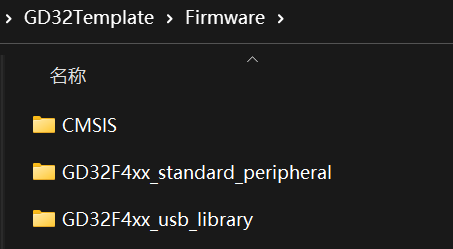</p><h4 data-lake-id="kDzAj" id="kDzAj"><span data-lake-id="u64bea41f" id="u64bea41f">程序入口移植</span></h4><p data-lake-id="ueb9b9636" id="ueb9b9636"><span class="lake-fontsize-12" data-lake-id="ua6008d4f" id="ua6008d4f" style="color: rgb(51, 51, 51)">找到我们的固件库的下载目录，将</span><code data-lake-id="u23be9be4" id="u23be9be4"><span class="lake-fontsize-12" data-lake-id="u7d667546" id="u7d667546" style="color: rgb(51, 51, 51)">GD32F4xx_Firmware_Library_V3.x.x\Template</span></code><span class="lake-fontsize-12" data-lake-id="u5d984939" id="u5d984939" style="color: rgb(51, 51, 51)">中的如下文件进行拷贝：</span></p><p data-lake-id="u7051c475" id="u7051c475">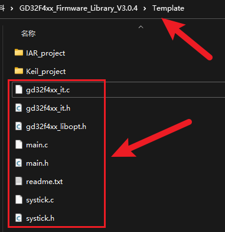</p><p data-lake-id="u61a94cec" id="u61a94cec"><span class="lake-fontsize-12" data-lake-id="ufb9533d6" id="ufb9533d6">将文件拷贝到工程目录的</span><code data-lake-id="u72c9f130" id="u72c9f130"><span class="lake-fontsize-12" data-lake-id="ua1a38ee9" id="ua1a38ee9">User</span></code><span class="lake-fontsize-12" data-lake-id="u7fd15dc1" id="u7fd15dc1">目录中</span></p><p data-lake-id="uc226a2d5" id="uc226a2d5">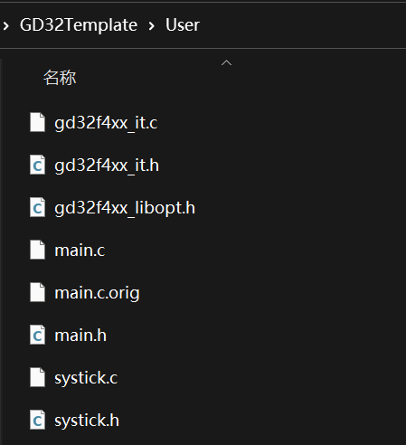</p><h3 data-lake-id="nJ412" id="nJ412"><span data-lake-id="u6370ce0d" id="u6370ce0d">Keil工程创建</span></h3><p data-lake-id="udd8cf36b" id="udd8cf36b"><span class="lake-fontsize-12" data-lake-id="u8edab6ed" id="u8edab6ed" style="color: rgb(51, 51, 51)">打开 keil，点击最上面的 Project 选项卡，选择 New uVision Project 选项新建一个工程</span></p><p data-lake-id="u57a73f43" id="u57a73f43"></p><p data-lake-id="u85bcc71a" id="u85bcc71a"><span class="lake-fontsize-12" data-lake-id="u29239d27" id="u29239d27" style="color: rgb(51, 51, 51)">选择保存路径为我们刚才创建的文件夹下的 Project，文件名为 GD32F407，然后点击保存</span></p><p data-lake-id="u4bffe46c" id="u4bffe46c">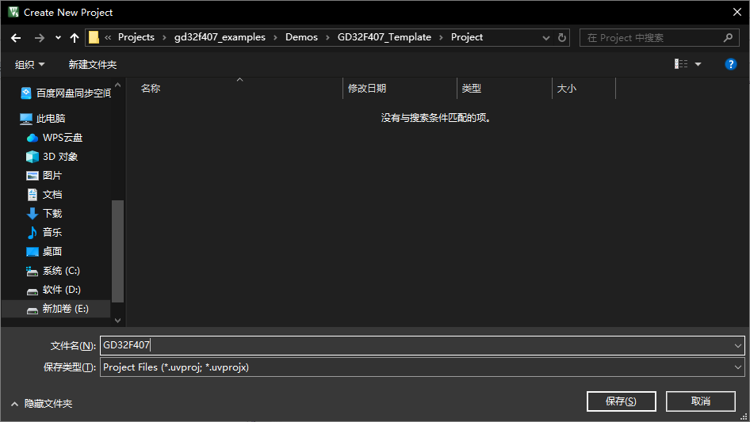</p><h4 data-lake-id="qjhaV" id="qjhaV"><span data-lake-id="uee14be12" id="uee14be12">设备选择</span></h4><p data-lake-id="uc69d4e78" id="uc69d4e78"><span class="lake-fontsize-12" data-lake-id="u3381e1cf" id="u3381e1cf" style="color: rgb(51, 51, 51)">点击保存之后，弹出工程配置窗口，选择所需芯片，这里依次选择GigaDevice-&gt;GD32F4xx Series-&gt;GD32F407-&gt;GD32F407VE，然后点击 ok</span></p><p data-lake-id="ud8f0d49d" id="ud8f0d49d">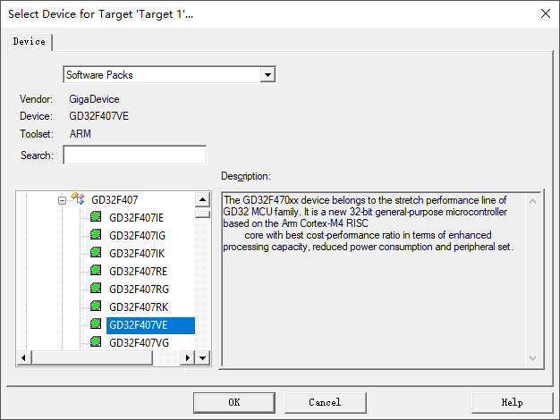</p><p data-lake-id="u25537c23" id="u25537c23"><span class="lake-fontsize-12" data-lake-id="ud3abdfa0" id="ud3abdfa0" style="color: rgb(51, 51, 51)">确定所需芯片之后，弹出 RTE 的环境配置对话框，选择工程所需的组件，不用配置,点击取消</span></p><p data-lake-id="u9ff54731" id="u9ff54731"></p><h4 data-lake-id="jofNE" id="jofNE"><span data-lake-id="ua19e5916" id="ua19e5916">keil分组创建</span></h4><p data-lake-id="uc0923c03" id="uc0923c03"><span class="lake-fontsize-12" data-lake-id="u2b1e5536" id="u2b1e5536" style="color: rgb(51, 51, 51)">我们的工程已经创建完成，但是可以看到工程里面还没有文件，我们可以创建一些分组和添加一些文件。</span></p><p data-lake-id="u51d29a4e" id="u51d29a4e"><span class="lake-fontsize-12" data-lake-id="u664468e2" id="u664468e2" style="color: rgb(51, 51, 51)">我们打开管理工程项去创建分组和添加文件</span></p><p data-lake-id="u9354e184" id="u9354e184"></p><p data-lake-id="uce5ad0d4" id="uce5ad0d4"><span data-lake-id="ucce21362" id="ucce21362">首先我们新建分组：</span></p><ul list="u59c7d266"><li data-lake-id="u6cd6eac9" fid="u7a45c134" id="u6cd6eac9"><span data-lake-id="u4032e645" id="u4032e645">User</span></li><li data-lake-id="u5f31e7b0" fid="u7a45c134" id="u5f31e7b0"><span data-lake-id="u3ef815b9" id="u3ef815b9">CMSIS</span></li><li data-lake-id="u72a02c13" fid="u7a45c134" id="u72a02c13"><span data-lake-id="uabfcc6f6" id="uabfcc6f6">Firmware</span></li><li data-lake-id="u7491e539" fid="u7a45c134" id="u7491e539"><span data-lake-id="ud7fedf75" id="ud7fedf75">Hardware</span></li><li data-lake-id="u2f0999e1" fid="u7a45c134" id="u2f0999e1"><span data-lake-id="u905ae0fc" id="u905ae0fc">Doc</span></li></ul><p data-lake-id="u477bd021" id="u477bd021"></p><h4 data-lake-id="GNaHS" id="GNaHS"><span data-lake-id="u74455450" id="u74455450">User分组添加</span></h4><p data-lake-id="uc7921be2" id="uc7921be2">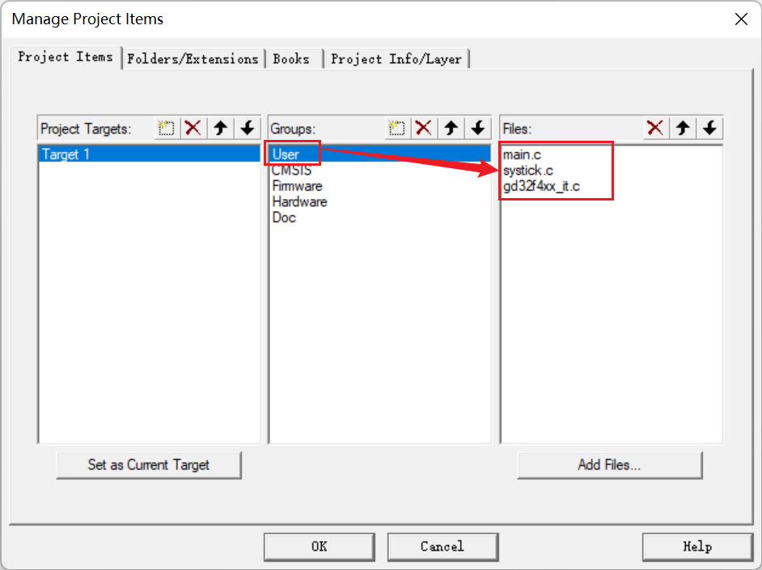</p><h4 data-lake-id="kozqY" id="kozqY"><span data-lake-id="u84dabbd4" id="u84dabbd4">CMSIS分组添加</span></h4><p data-lake-id="u1e73142e" id="u1e73142e">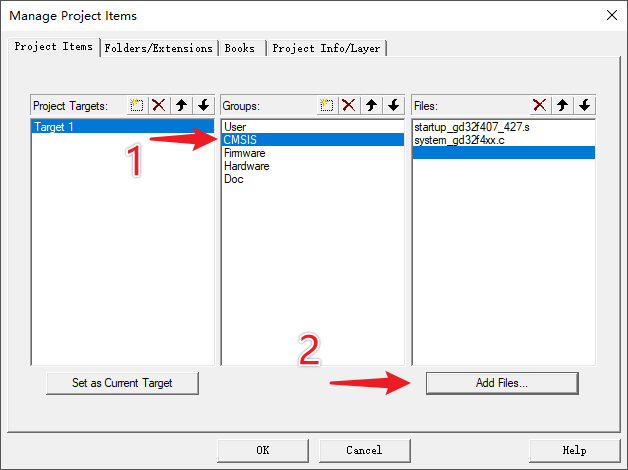</p><p data-lake-id="u6204e87a" id="u6204e87a"><span class="lake-fontsize-12" data-lake-id="ubcf4d06d" id="ubcf4d06d">来到</span><code data-lake-id="u5abf756e" id="u5abf756e"><span class="lake-fontsize-12" data-lake-id="ua58eaa64" id="ua58eaa64">Firmware\CMSIS\GD\GD32F4xx\Source</span></code><span class="lake-fontsize-12" data-lake-id="u48520895" id="u48520895">目录下，选择如下：</span></p><p data-lake-id="u873f3842" id="u873f3842">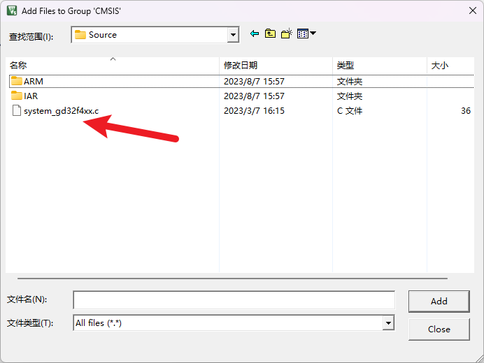</p><p data-lake-id="uaad24ddc" id="uaad24ddc"><span class="lake-fontsize-12" data-lake-id="u57aa1290" id="u57aa1290">来到</span><code data-lake-id="uba894866" id="uba894866"><span class="lake-fontsize-12" data-lake-id="u1215f781" id="u1215f781">Firmware\CMSIS\GD\GD32F4xx\Source\ARM</span></code><span class="lake-fontsize-12" data-lake-id="ud0cb5243" id="ud0cb5243">目录下，选择如下：</span></p><p data-lake-id="u03a5e1f2" id="u03a5e1f2">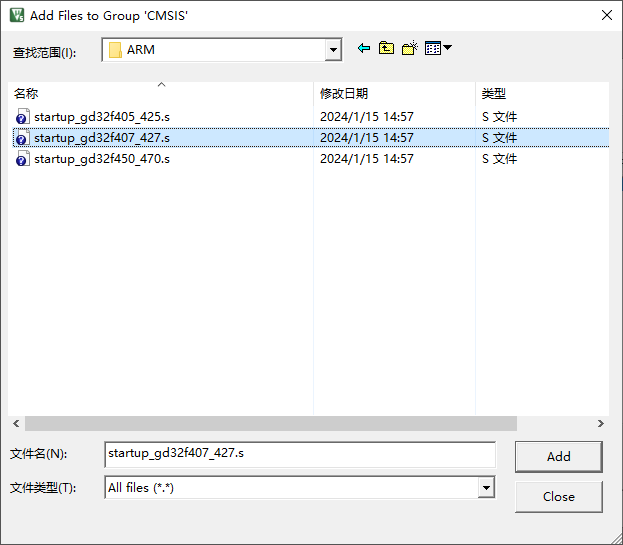</p><h4 data-lake-id="nbtls" id="nbtls"><span data-lake-id="u3eb1bc33" id="u3eb1bc33">Firmware分组添加</span></h4><p data-lake-id="u7646726e" id="u7646726e"><span class="lake-fontsize-12" data-lake-id="ua3c866ab" id="ua3c866ab">来到</span><code data-lake-id="u2936691b" id="u2936691b"><span class="lake-fontsize-12" data-lake-id="uf0ae0ea7" id="uf0ae0ea7">Firmware\GD32F4xx_standard_peripheral\Source</span></code><span class="lake-fontsize-12" data-lake-id="ub706ceed" id="ub706ceed">目录下，选择如下：</span></p><p data-lake-id="ub0aeecf4" id="ub0aeecf4">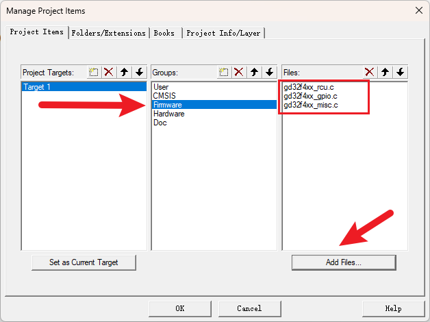</p><ul list="u4259fa04"><li data-lake-id="u3e13f03d" fid="u2f7bc262" id="u3e13f03d"><span class="lake-fontsize-12" data-lake-id="u6f335c57" id="u6f335c57">gd32f4xx_rcu.c</span></li><li data-lake-id="u1faaef15" fid="u2f7bc262" id="u1faaef15"><span class="lake-fontsize-12" data-lake-id="u7e6263d4" id="u7e6263d4">gd32f4xx_gpio.c</span></li><li data-lake-id="u4e14734d" fid="u2f7bc262" id="u4e14734d"><span class="lake-fontsize-12" data-lake-id="u64dca258" id="u64dca258">gd32f4xx_misc.c</span></li></ul><h4 data-lake-id="GK9f9" id="GK9f9"><span class="lake-fontsize-12" data-lake-id="ua459d18a" id="ua459d18a">工程配置</span></h4><ol list="uc4c03735"><li data-lake-id="u629a449d" fid="uc77f5248" id="u629a449d"><span class="lake-fontsize-12" data-lake-id="u3499c0f1" id="u3499c0f1">Target配置</span></li></ol><p data-lake-id="u71fcb627" id="u71fcb627" style="padding-left: 2em"></p><p data-lake-id="u74b66f7d" id="u74b66f7d" style="padding-left: 2em"><span data-lake-id="u82b5c0b2" id="u82b5c0b2">点击魔法棒，进入配置中的</span><code data-lake-id="u1817d2a0" id="u1817d2a0"><span data-lake-id="u7e0a6fc7" id="u7e0a6fc7">Target</span></code><span data-lake-id="u86e73638" id="u86e73638">，选择ARM compiler 为V6</span></p><p data-lake-id="u97534aa6" id="u97534aa6" style="padding-left: 2em"><span data-lake-id="ueb1c6c86" id="ueb1c6c86">勾选</span><code data-lake-id="u9ed1bf35" id="u9ed1bf35"><span data-lake-id="ued717313" id="ued717313">Use MicroLIB</span></code></p><ol list="u5eaa2cc9" start="2"><li data-lake-id="u78ce940e" fid="u4ce7f393" id="u78ce940e"><span data-lake-id="uc55a702b" id="uc55a702b">Output配置</span></li></ol><p data-lake-id="udd38f5a2" id="udd38f5a2" style="padding-left: 2em"></p><p data-lake-id="u0378def2" id="u0378def2" style="padding-left: 2em"><span data-lake-id="ucee7755a" id="ucee7755a">选择创建hex文件</span></p><ol list="u1181e1eb" start="3"><li data-lake-id="ucdca24e6" fid="u5433f65f" id="ucdca24e6"><span data-lake-id="ue5dd6c56" id="ue5dd6c56">C/C++配置</span></li></ol><p data-lake-id="u0591192f" id="u0591192f" style="padding-left: 2em">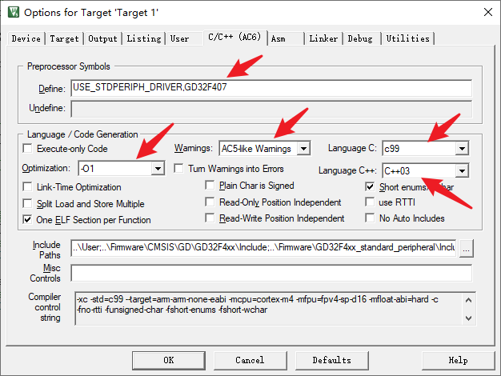</p><ul data-lake-indent="1" list="ue5b819b3"><li data-lake-id="u80a59ec0" fid="u79a0a34b" id="u80a59ec0"><span data-lake-id="ucb55fdcc" id="ucb55fdcc">Define配置为：</span><code data-lake-id="u60f4dc5f" id="u60f4dc5f"><span data-lake-id="u0b5eb9f6" id="u0b5eb9f6">USE_STDPERIPH_DRIVER,GD32F407</span></code></li><li data-lake-id="ubb95b6d5" fid="u79a0a34b" id="ubb95b6d5"><span data-lake-id="ueb1cb6d4" id="ueb1cb6d4">Warings选择</span><code data-lake-id="u01d1aacf" id="u01d1aacf"><span data-lake-id="u1e21a870" id="u1e21a870">AC5-like warnings</span></code></li><li data-lake-id="u3b9a8c01" fid="u79a0a34b" id="u3b9a8c01"><span data-lake-id="u6715ff2b" id="u6715ff2b">选择</span><code data-lake-id="ub3e0bd98" id="ub3e0bd98"><span data-lake-id="u309b5ce2" id="u309b5ce2">c99</span></code><span data-lake-id="u24e4e179" id="u24e4e179">和</span><code data-lake-id="ueb99b7cd" id="ueb99b7cd"><span data-lake-id="uaa889098" id="uaa889098">c++03</span></code></li><li data-lake-id="ud178043e" fid="u79a0a34b" id="ud178043e"><span data-lake-id="u1418a965" id="u1418a965">Optimization选择</span><code data-lake-id="u6846d905" id="u6846d905"><span data-lake-id="uf9b17387" id="uf9b17387">-O1</span></code></li></ul><ol list="u1c379acd" start="4"><li data-lake-id="u9ad97ee8" fid="u50f993c2" id="u9ad97ee8"><span data-lake-id="ufbe4e56d" id="ufbe4e56d">Include配置</span></li></ol><p data-lake-id="uf917b6ff" id="uf917b6ff" style="padding-left: 2em">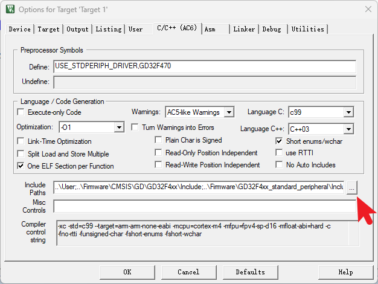</p><p data-lake-id="u8227cf48" id="u8227cf48" style="padding-left: 2em">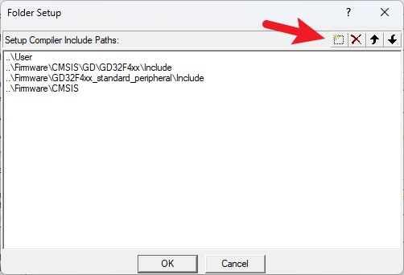</p><p data-lake-id="u0646b800" id="u0646b800" style="padding-left: 2em"><span data-lake-id="u725834f6" id="u725834f6">添加如下几个目录：</span></p><ul list="ucf842761"><li data-lake-id="u5215a28b" fid="u0a4e107c" id="u5215a28b"><code data-lake-id="ua328d5b7" id="ua328d5b7"><span data-lake-id="ude72b503" id="ude72b503">User</span></code></li><li data-lake-id="u69f3443b" fid="u0a4e107c" id="u69f3443b"><code data-lake-id="u36b6fef2" id="u36b6fef2"><span data-lake-id="u6dd312f0" id="u6dd312f0">Firmware\CMSIS\GD\GD32F4xx\Include</span></code></li><li data-lake-id="u082fb917" fid="u0a4e107c" id="u082fb917"><code data-lake-id="u18d20514" id="u18d20514"><span data-lake-id="u9c21ff8b" id="u9c21ff8b">Firmware\CMSIS</span></code></li><li data-lake-id="u1c69fc68" fid="u0a4e107c" id="u1c69fc68"><code data-lake-id="u8fffbc2d" id="u8fffbc2d"><span data-lake-id="ua663c454" id="ua663c454">Firmware\GD32F4xx_standard_peripheral\Include</span></code></li></ul><p data-lake-id="u62e64d03" id="u62e64d03"><br/></p><h4 data-lake-id="Rggoo" id="Rggoo"><span data-lake-id="u41df644f" id="u41df644f">程序代码修改</span></h4><p data-lake-id="u183bd341" id="u183bd341"><span class="lake-fontsize-12" data-lake-id="u98be4373" id="u98be4373" style="color: rgb(51, 51, 51)">打开 main.c 文件，删除一些不必要的代码，剩余部分如图：</span></p><p data-lake-id="ua9680d9a" id="ua9680d9a">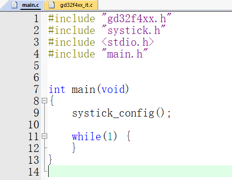</p><p data-lake-id="u783258c1" id="u783258c1"><span class="lake-fontsize-12" data-lake-id="uba87602d" id="uba87602d" style="color: rgb(51, 51, 51)">打开 gd32f4xx_it.c 文件，拉到最后面，然后删掉 Systick_Handler 里的</span><code data-lake-id="u4135c46c" id="u4135c46c"><span class="lake-fontsize-12" data-lake-id="u9f602c6d" id="u9f602c6d" style="color: rgb(51, 51, 51)">led_spark()</span></code><span class="lake-fontsize-12" data-lake-id="u31486392" id="u31486392" style="color: rgb(51, 51, 51)">代码，剩余部分如图，画红色线框的是要保留的内容</span></p><p data-lake-id="ud1522296" id="ud1522296"></p><h4 data-lake-id="dbdC8" id="dbdC8"><span data-lake-id="ud4884206" id="ud4884206">系统时钟修改为168M</span></h4><ol list="u91cc81fe"><li data-lake-id="u63353735" fid="u8b741edd" id="u63353735"><span class="lake-fontsize-12" data-lake-id="u90258f1b" id="u90258f1b">修改</span><code data-lake-id="u568804e2" id="u568804e2"><span class="lake-fontsize-12" data-lake-id="u972630cb" id="u972630cb">system_gd32f4xx.c</span></code><span class="lake-fontsize-12" data-lake-id="uc58d6ff8" id="uc58d6ff8">系统时钟宏定义</span></li></ol><p data-lake-id="u527fdc0b" id="u527fdc0b"><span data-lake-id="u8c8cbea3" id="u8c8cbea3">打开</span><code data-lake-id="u6d789a4f" id="u6d789a4f"><span data-lake-id="ua527b0b0" id="ua527b0b0">system_gd32f4xx.c</span></code><span data-lake-id="ubed26db6" id="ubed26db6">文件，注释65行</span></p><span class="yuque-card-unsupported">[codeblock]</span><p data-lake-id="u88e5f116" id="u88e5f116"><span data-lake-id="u79414246" id="u79414246">打开51行,选择168M主频,外接8M晶振</span></p><span class="yuque-card-unsupported">[codeblock]</span><p data-lake-id="ue7765b82" id="ue7765b82"><span class="lake-fontsize-12" data-lake-id="ue7f80d84" id="ue7f80d84">改后效果如下：</span></p><p data-lake-id="u6cc32063" id="u6cc32063">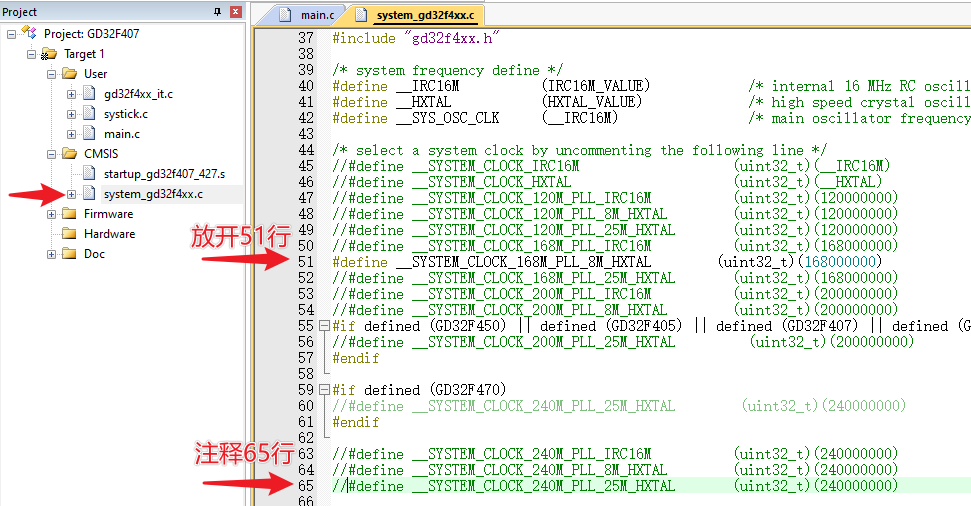</p><ol list="u0fc1982d" start="2"><li data-lake-id="ud16034cc" fid="u9f4f7721" id="ud16034cc"><span data-lake-id="uf678607a" id="uf678607a">修改外部晶振频率</span></li></ol><p data-lake-id="ub32d7b19" id="ub32d7b19"><span data-lake-id="u40ddfb59" id="u40ddfb59">打开</span><code data-lake-id="uf193073d" id="uf193073d"><span class="lake-fontsize-12" data-lake-id="u802e686b" id="u802e686b">system_gd32f4xx.c</span></code><span class="lake-fontsize-12" data-lake-id="ud805dd91" id="ud805dd91">依赖的头文件</span><code data-lake-id="ue3b8376c" id="ue3b8376c"><span class="lake-fontsize-12" data-lake-id="u5051cfa0" id="u5051cfa0">gd32f4xx.h</span></code><span class="lake-fontsize-12" data-lake-id="u24010540" id="u24010540">, 注释掉原有外部高速晶振</span><code data-lake-id="u1f192669" id="u1f192669"><span class="lake-fontsize-12" data-lake-id="ua8043499" id="ua8043499">HXTAL_VALUE</span></code><span class="lake-fontsize-12" data-lake-id="u49998978" id="u49998978">数值，添加新的一行，将晶振频率由</span><code data-lake-id="u50f8597f" id="u50f8597f"><span class="lake-fontsize-12" data-lake-id="u6dc8b630" id="u6dc8b630">25M</span></code><span class="lake-fontsize-12" data-lake-id="u04763035" id="u04763035">修改为</span><code data-lake-id="u9e635b1c" id="u9e635b1c"><span class="lake-fontsize-12" data-lake-id="u8655cb16" id="u8655cb16">8M</span></code></p><span class="yuque-card-unsupported">[codeblock]</span><p data-lake-id="u6bfd335e" id="u6bfd335e"><span class="lake-fontsize-12" data-lake-id="u3367d622" id="u3367d622">改后效果如下：</span></p><p data-lake-id="u3f835b24" id="u3f835b24">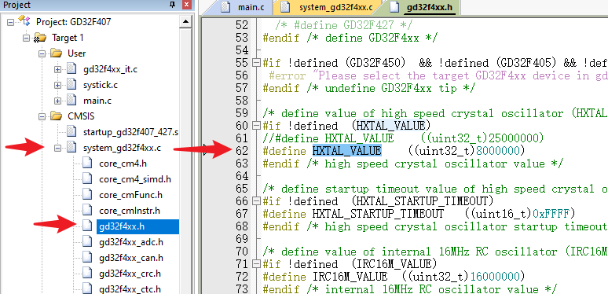</p><h4 data-lake-id="URHdV" id="URHdV"><br/></h4><p data-lake-id="u6b4cc7cb" id="u6b4cc7cb"><br/></p><h4 data-lake-id="xWCCv" id="xWCCv"><span data-lake-id="uc142f83e" id="uc142f83e">增加延时函数（可选）</span></h4><p data-lake-id="ua34fbc98" id="ua34fbc98"><span class="lake-fontsize-12" data-lake-id="u8b9a6794" id="u8b9a6794">打开`</span><code data-lake-id="uf30da72f" id="uf30da72f"><span class="lake-fontsize-12" data-lake-id="u720a1e1f" id="u720a1e1f">systick.h</span></code><span class="lake-fontsize-12" data-lake-id="u4bbfd24d" id="u4bbfd24d">文件，添加</span><code data-lake-id="u49a19416" id="u49a19416"><span class="lake-fontsize-12" data-lake-id="ub77a4fe7" id="ub77a4fe7">delay_1us(uint32_t count)</span></code><span class="lake-fontsize-12" data-lake-id="ub5ed8266" id="ub5ed8266">函数，如下图：</span></p><p data-lake-id="uc37dc009" id="uc37dc009">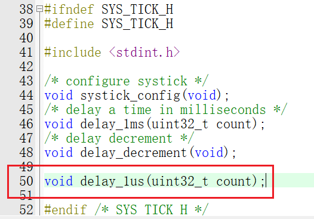</p><p data-lake-id="ub83b5868" id="ub83b5868"><span class="lake-fontsize-12" data-lake-id="uacbc58f0" id="uacbc58f0">打开</span><code data-lake-id="ucbddca06" id="ucbddca06"><span class="lake-fontsize-12" data-lake-id="u9a882c57" id="u9a882c57">systick.c</span></code><span class="lake-fontsize-12" data-lake-id="u47508a91" id="u47508a91">文件，修改</span><code data-lake-id="ue95b689a" id="ue95b689a"><span class="lake-fontsize-12" data-lake-id="u515b20f5" id="u515b20f5">systick_config</span></code><span class="lake-fontsize-12" data-lake-id="ud4efc004" id="ud4efc004">函数：</span></p><span class="yuque-card-unsupported">[codeblock]</span><span class="yuque-card-unsupported">[codeblock]</span><p data-lake-id="u71cc3439" id="u71cc3439"><span class="lake-fontsize-12" data-lake-id="u5044097f" id="u5044097f">修改</span><code data-lake-id="u5fd9fa18" id="u5fd9fa18"><span class="lake-fontsize-12" data-lake-id="u55d26331" id="u55d26331">delay_1ms()</span></code><span class="lake-fontsize-12" data-lake-id="ue7fe0f69" id="ue7fe0f69">函数：</span></p><span class="yuque-card-unsupported">[codeblock]</span><span class="yuque-card-unsupported">[codeblock]</span><p data-lake-id="u51c4b852" id="u51c4b852"><span class="lake-fontsize-12" data-lake-id="u78901874" id="u78901874">增加</span><code data-lake-id="u72020774" id="u72020774"><span class="lake-fontsize-12" data-lake-id="u6abeab4f" id="u6abeab4f">delay_1us()</span></code><span class="lake-fontsize-12" data-lake-id="u9674be44" id="u9674be44">函数：</span></p><span class="yuque-card-unsupported">[codeblock]</span><p data-lake-id="u6b12e36b" id="u6b12e36b"><span class="lake-fontsize-12" data-lake-id="ub19bf3f6" id="ub19bf3f6">完整代码如下:</span></p><span class="yuque-card-unsupported">[codeblock]</span><span class="yuque-card-unsupported">[codeblock]</span><h3 data-lake-id="cP1Jm" id="cP1Jm"><span data-lake-id="u97b74e67" id="u97b74e67">问题及解决</span></h3><p data-lake-id="u263897a7" id="u263897a7"><span data-lake-id="u7627e0b2" id="u7627e0b2">​</span><br/></p><h4 data-lake-id="JahAS" id="JahAS"><span data-lake-id="u080e6442" id="u080e6442">兼容性升级</span></h4><p data-lake-id="uba6c8586" id="uba6c8586"><span data-lake-id="ub73aa17d" id="ub73aa17d">很多芯片官网给出的示例代码是在Keil4老版本工具下创建的，如果使用的三方项目使用Keil4创建的工程，则需要根据官网建议，执行Keil5的兼容性提升操作：</span></p><p data-lake-id="ue880942d" id="ue880942d"><a data-lake-id="u10388f28" href="https://developer.arm.com/documentation/ka002800/latest" id="u10388f28" rel="noopener noreferrer" target="_blank"><span data-lake-id="ud81b2e57" id="ud81b2e57">https://developer.arm.com/documentation/ka002800/latest</span></a></p><p data-lake-id="u86bc83f6" id="u86bc83f6"><span data-lake-id="uc1a1778a" id="uc1a1778a">依次点击：</span><code data-lake-id="ucc497b66" id="ucc497b66"><span data-lake-id="u2f6adcad" id="u2f6adcad">Project -&gt; Manage -&gt; Migrate to Version 5 Format.</span></code></p><p data-lake-id="ud365bb26" id="ud365bb26"><span data-lake-id="u2d2999c1" id="u2d2999c1">​</span><br/></p><p data-lake-id="ub80ca4c5" id="ub80ca4c5"><span data-lake-id="u047a3518" id="u047a3518">报错类似下图：</span></p><p data-lake-id="uafc6a976" id="uafc6a976">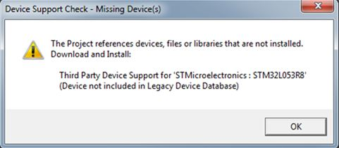</p><p data-lake-id="u52827825" id="u52827825">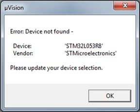</p><p data-lake-id="u125f3f6f" id="u125f3f6f"><span data-lake-id="u5283fa90" id="u5283fa90">对话框提示 </span><code data-lake-id="udadc306f" id="udadc306f"><span data-lake-id="u94681137" id="u94681137">Please update your device selection</span></code></p><p data-lake-id="u3b40978a" id="u3b40978a"><span data-lake-id="u9e81c7a7" id="u9e81c7a7">​</span><br/></p><h4 data-lake-id="rBRXh" id="rBRXh"><span data-lake-id="u32bde295" id="u32bde295">FCARM 文件类型配置错误</span></h4><p data-lake-id="u2ca30b58" id="u2ca30b58"><code data-lake-id="u74dc3d8b" id="u74dc3d8b"><span data-lake-id="u06636801" id="u06636801">FCARM - Output Name not specified, please check 'Options for Target -Utilities'</span></code></p><p data-lake-id="u67f0a24b" id="u67f0a24b">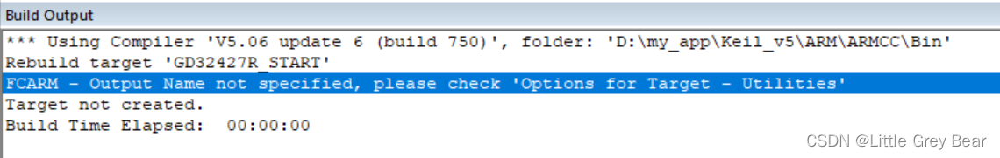<span data-lake-id="uf7cfe635" id="uf7cfe635">FCARM - Output Name not specified, please check ‘Options for Target - Utilities’</span></p><p data-lake-id="u5485c443" id="u5485c443"><span data-lake-id="u300446a6" id="u300446a6">这个错误是由于新导入到工程内的文件，未被正确识别而引发的错误</span></p><p data-lake-id="u2f54970b" id="u2f54970b"><span data-lake-id="u7d1a181e" id="u7d1a181e">解决：文件右键重新选择文件类型</span></p><p data-lake-id="u2b2efd2e" id="u2b2efd2e">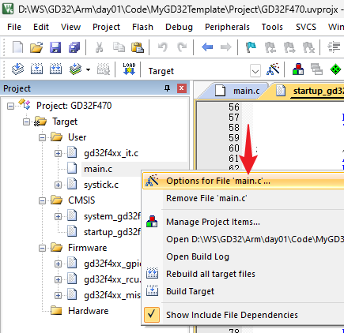</p><p data-lake-id="u759a1698" id="u759a1698">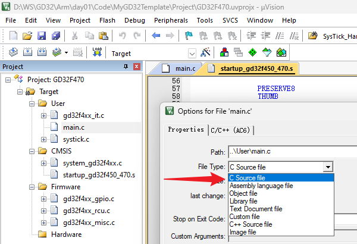</p><p data-lake-id="ubbd39134" id="ubbd39134"><span data-lake-id="u457d2a09" id="u457d2a09">这里的c文件可能会被误识别为Image file导致编译失败（看main.c前的图标和别的c文件都不同），这里选</span><code data-lake-id="u81d67dd5" id="u81d67dd5"><span data-lake-id="u0a9bb81a" id="u0a9bb81a">C Source file</span></code><span data-lake-id="u152a1eb7" id="u152a1eb7">即可，如果是</span><code data-lake-id="ufa0bad70" id="ufa0bad70"><span data-lake-id="u8ccc5ed2" id="u8ccc5ed2">.s</span></code><span data-lake-id="uc671ea20" id="uc671ea20">结尾的汇编文件，这里要选择</span><code data-lake-id="uc3c43da0" id="uc3c43da0"><span data-lake-id="u6b4e30ff" id="u6b4e30ff">Assembly language file</span></code></p><p data-lake-id="u984366a6" id="u984366a6"><span data-lake-id="u029d8771" id="u029d8771">​</span><br/></p><p data-lake-id="u03575e9c" id="u03575e9c"><span data-lake-id="u17335c56" id="u17335c56">如果是汇编文件类型识别错误，也会报出类似如下错误：</span></p><p data-lake-id="u6e2d128c" id="u6e2d128c">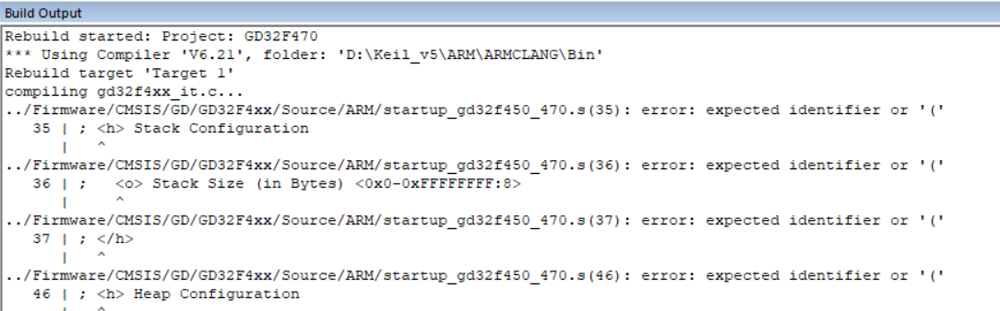</p><p data-lake-id="u98f52edf" id="u98f52edf"><span data-lake-id="u81fa7bf8" id="u81fa7bf8">修改成对应类型</span><code data-lake-id="u7cd7ee48" id="u7cd7ee48"><span data-lake-id="ua5e6b022" id="ua5e6b022">Assembly language file</span></code><span data-lake-id="u45fe9d8b" id="u45fe9d8b">就行：</span></p><p data-lake-id="u91d79201" id="u91d79201">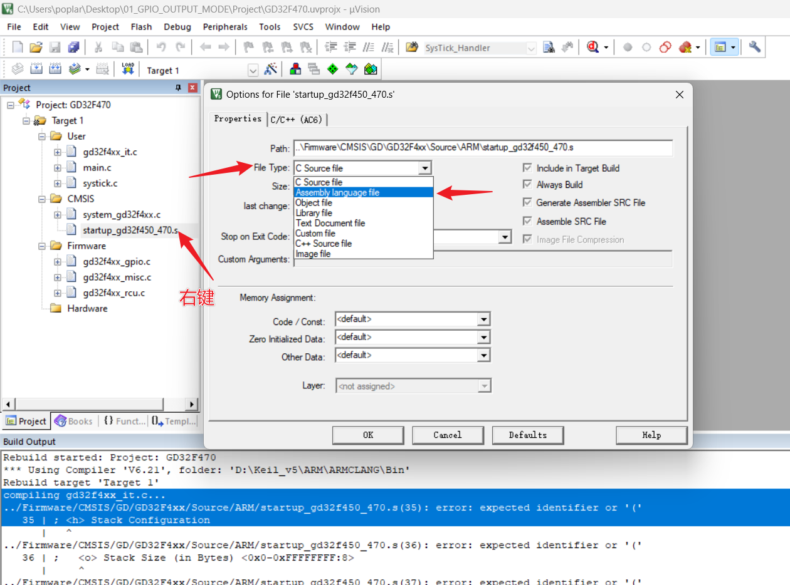</p><p data-lake-id="udf49e29b" id="udf49e29b"><span data-lake-id="u103f96ca" id="u103f96ca">​</span><br/></p><h2 data-lake-id="wv8xb" id="wv8xb"><span data-lake-id="u758e0a4f" id="u758e0a4f">练习题</span></h2><ol list="u74882b6a"><li data-lake-id="ubb3f598d" fid="u3082cfd1" id="ubb3f598d"><span data-lake-id="ud819dae0" id="ud819dae0">按照流程搭建项目模板</span></li></ol><p data-lake-id="u10186f14" id="u10186f14"><br/></p>